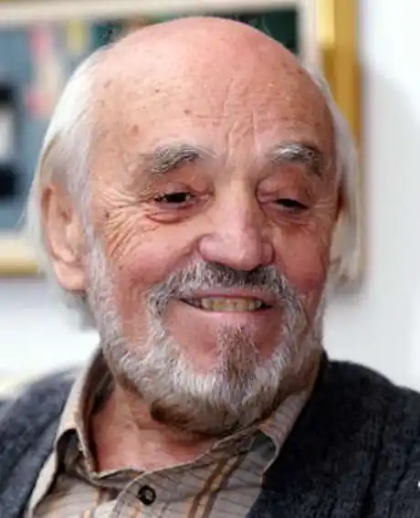

Бойчук Богдан Миколайович (11. 10. 1927, с. Бертники, нині Монастирського району Тернопільської області – 10. 02. 2017, Нью-Йорк) – український письменник, перекладач і критик у США. Від 1944 жив в таборі для переміщених осіб у м. Ашаффенбурґ (Німеччина), де закінчив табірну гімназію. Від 1949 – у США (м. Ґлен-Спей). Закінчив Нью-Йоркський коледж (1957). Зі створенням 1957 Об'єднання українських письменників "Слово" став його членом, а також одним з організаторів Нью-Йоркської групи поетів, що виникла як відгалуження "Слова". За його участі в Нью-Йорку щорічно 1959–71 виходив збірник "Нові поезії".
Від початку 1950-тих років Бойчук активно включився в українське літературне життя. Його літературна діяльність не обмежується тільки поетичною творчістю. Він також пише й видає драматичні твори, прозу, переклади з англійської, іспанської й російської мов на українську, і з української — на англійську. Проявляє себе й на полі літературознавчої критики, опублікувавши широку низку статей, рецензій, передмов. Слід також підкреслити його палку активність невтомного співукладача й співредактора двох поважних антологій української поезії, автора мемуарів тощо.
Богдан Бойчук — автор поетичних збірок "Час болю" (1957), "Спомини любови" (1963), "Вірші для Мехіко" (1964), "Мандрівка тіл" (1967), "Подорож з учителем" (1976), "Вірші, вибрані й передостанні" (1983), "Третя осінь" (1991), що виходили друком у Нью-Йорку, Мюнхені та Києві. Його поетичні збірки друкувались англійською, польською, румунською й російською мовою. Бойчук автор п'єс ("Дві драми", 1968) та кількох неопублікованих романів ("Підглядник і його краєвиди", "Аліпій II і його наречена", трилогія "Паноптикум Ді Пі" та інші). У його літературознавчому доробку зокрема упорядкування таких книжок, як "Зібрані твори Олекси Стефановича" (1975), "Зібрані твори Богдана Кравцева" (1978, 1980, 1994), "Спомини" Йосипа Гірняка (1982), співредагування антологій "Координати" та "Поза традиції". Богдан Бойчук переклав англійською мовою твори Богдана-Ігоря Антонича, Івана Драча, Бориса Пастернака, українською — твори Хуана Рамона Хіменеса, Семюеля Беккета, Стенлі Кюніца, Дейвіда Іґнатова. Бойчук — один із співзасновників Нью-Йоркської Групи, був співредактором річника цієї ж Групи "Нові Поезії" (1959-1971), ініціатором і головним редактором Нью-Йорксько — Київського літературно-мистецького квартальника "Світо-Вид" (1990-1999). Він також довгими роками працював як літературний редактор при місячнику "Сучасність" (Мюнхен), а саме від 1961-ого року до 1973-ого. Він — член Національної Спілки Письменників України. У жовтні 1997 року виступав на творчому вечорі у Тернопільському державному педагогічному університеті. 2003 року у видавництві "Факт" у серії "Українські мемуари" вийшла книга Б. Бойчука під назвою "Спомини в біографії". 27 листопада 2014 року поет виступав на творчому вечорі в Національному музеї літератури України. Восени 2016 року читав свої вірші в театрі Леся Курбаса у Львові. У 2016 році Богдан Бойчук брав участь у презентації фільму Олександра Фразе-Фразенка "Акваріум в морі. Історія Нью-Йоркської групи поетів" у Львові. Заповідав поховати себе на Високому Замку у Львові. У 2017 році Літературна аґенція "Піраміда" видала підсумкову збірку статей Богдана Бойчука про театр, балет, українську та світову літературу — "Навіщо про це говорю". Помер 10 лютого 2017 року в Нью-Йорку.